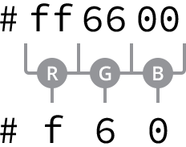

Знакомство с CSS
CSS является сложным языком, который отнимает совсем немного энергии. Он позволяет добавить макет и дизайн для наших страниц и обмениваться стилями от элемента к элементу и страницы к странице. Прежде чем мы сможем раскрыть все особенности CSS, есть несколько аспектов языка, которые вы должны в полной мере понимать.
Первое что важно знать, как именно отображаются стили. В частности, мы должны знать, как работают разные типы селекторов и как порядок этих селекторов может повлиять на отображение стилей. Мы также хотим понимать несколько основных значений свойств, которые постоянно появляются в CSS, в частности те, которые касаются цвета и размера.
Давайте заглянем под капот CSS, чтобы точно узнать что происходит.
Каскад
Мы начнём разбирать, как именно отображаются стили со взгляда на то, что известно как каскад и изучения несколько примеров каскада в действии. В CSS все стили идут каскадом сверху вниз, что позволяет добавлять другой стиль или переписывать его, тем самым таблицы стилей развиваются.
Скажем, к примеру, что мы выбрали все элементы абзаца в верхней части нашего стиля и установили для них цвет фона orange и шрифт размером 24 пикселя. Затем в нижней части нашего стиля мы снова выбираем все элементы абзаца и устанавливаем для них цвет фона green, как показано здесь.
p {
background: orange;
font-size: 24px;
}
p {
background: green;
}Поскольку селектор абзаца, который устанавливает зелёный цвет фона располагается после селектора абзаца, который задаёт оранжевый цвет фона, он будет иметь приоритет в каскаде. Все абзацы появятся на зелёном фоне. Размер шрифта останется 24 пикселя, потому что второй селектор абзаца не определил новый размер шрифта.
Каскадные свойства
Каскад работает со свойствами внутри отдельных селекторов. Опять же, скажем, к примеру, что мы выбрали все элементы абзаца и установили для них цвет фона orange. Затем прямо ниже свойства background и его значения мы добавляем ещё одно свойство и значение, которое задаёт цвет фона green, как показано здесь.
p {
background: orange;
background: green;
}Поскольку объявление зелёного цвета фона написано после объявления оранжевого цвета фона, как и прежде, наши абзацы будут отображаться на зелёном фоне.
Все стили идут каскадом сверху нашей таблицы стилей до её низа. Есть, однако, случаи, когда каскад не так хорошо работает — порой, когда применяются различные типы селекторов и специфичность этих селекторов разбивает каскад. Давайте взглянем.
Вычисление специфичности
Каждый селектор в CSS имеет вес специфичности, он вместе с положением в каскаде определяет, как будут отображаться стили.
В уроке 1 «Создание первой веб-страницы» мы говорили о трёх разных видах селекторов: селектор типа, класс и идентификатор. Каждый из этих селекторов имеет различный вес специфичности.
У селектора типа низкий вес специфичности и значение балла 0-0-1. У селектора класса средний вес специфичности и значение балла 0-1-0. Наконец, у идентификаторов высокая специфичность и значение балла 1-0-0. Как мы видим, баллы специфичности вычисляются с помощью трёх колонок. В первой колонке количество идентификаторов, во второй классов, а третья колонка считает селекторы типа.
Важно отметить, что идентификатор имеет больший вес специфичности чем селектор класса, а класс больший вес, чем селектор типа.
Баллы специфичности
Баллы специфичности намеренно разделены дефисом, так как их значения не вычисляются по десятичной системе. У селекторов класса нет 10 баллов, у идентификаторов нет 100 баллов. Вместо этого эти баллы следует читать как 0-1-0 и 1-0-0 соответственно. Мы внимательно рассмотрим, почему эти значения пишутся через дефис в ближайшее время, когда мы станем комбинировать селекторы.
Чем выше вес специфичности селектора, тем больше первенства ему отдаётся при возникновении конфликта стилей. Например, если элемент абзаца выбирается с помощью селектора типа в одном месте и идентификатора в другом, то идентификатор будет иметь приоритет над селектором типа, независимо от того, где идентификатор появляется в каскаде.
HTML
<p id="food">...</p>CSS
#food {
background: green;
}
p {
background: orange;
}Здесь у нас есть элемент абзаца со значением атрибута id — food. В нашем CSS этот абзац выбирается двумя различными типами селекторов: один селектор типа, а второй идентификатор. Несмотря на то, что селектор типа указан после идентификатора в каскаде, идентификатор имеет приоритет над селектором типа, потому что он имеет больший вес специфичности, следовательно, абзац появится на зелёном фоне.
Специфичность веса разных типов селекторов невероятно важно помнить. Порой стили не могут появиться на элементах, как предполагалось, вероятно оттого, что специфичность веса наших селекторов нарушила каскад, поэтому наши стили не отображаются должным образом.
Понимание того, как каскад и специфичность работают — это огромное затруднение и мы будем продолжать освещать эту тему. А сейчас давайте посмотрим на то, как стать немного конкретнее и обоснованными с нашими селекторами, путём их комбинации. Имейте в виду, что при комбинации селекторов, мы также меняем их специфичность.
Комбинация селекторов
Пока мы рассмотрели как использовать разные типы селекторов индивидуально, но мы также должны знать, как использовать эти селекторы вместе. Комбинируя селекторы мы можем быть более конкретными в том, какой элемент или группу элементов мы хотели бы выбрать.
Скажем, к примеру, мы хотим выбрать все элементы абзаца, которые находятся внутри элемента со значением атрибута класса hotdog и установить для них цвет фона как brown. Однако, если один из этих абзацев, случаем, содержит значение атрибута класса mustard, мы хотим установить его цвет фона как yellow. Наши HTML и CSS могут выглядеть следующим образом:
HTML
<div class="hotdog">
<p>...</p>
<p>...</p>
<p class="mustard">...</p>
</div>CSS
.hotdog p {
background: brown;
}
.hotdog p.mustard {
background: yellow;
}Когда селекторы комбинируются они должны читаться справа налево. Самый крайний селектор справа, непосредственно перед открытой скобкой, известен как ключевой селектор. Он определяет, к каким именно элементам будут применяться стили. Любой селектор слева от ключевого будет служить уточнением.
Первый комбинированный селектор выше, .hotdog р, включает в себя два селектора: класс и селектор типа. Эти два селектора разделяются пробелом. Ключевым селектором выступает селектор типа, нацеленный на элементы абзаца. Поскольку этот селектор сочетается с классом hotdog, полный комбинированный селектор выбирает только элементы абзаца, которые находятся внутри элемента с классом hotdog.
Второй селектор выше, .hotdog p.mustard, включает в себя три селектора: два класса и один селектор типа. Единственное различие между вторым и первым селекторами является добавление класса mustard в конце селектора абзаца. Поскольку новый класс mustard находится в правой части комбинированного селектора, то он ключевой, а все отдельные селекторы идущие перед ним теперь уточняющие.
Пробелы в селекторах
В предыдущем комбинированном селекторе, .hotdog p.mustard, есть пробел между классом hotdog и селектором абзаца, но не между селектором абзаца и классом mustard. Использование пробелов и отказ от них — это большая разница в селекторах.
Поскольку нет пробела между селектором абзаца и классом mustard, это значит что будут выбраны только абзацы с классом mustard. Если бы селектор абзаца был удалён, а класс mustard содержал пробелы с двух сторон, то был бы выбран любой элемент с классом mustard, а не только абзацы.
Лучше всего не писать селектор типа перед селектором класса. Как правило, мы хотим выбрать любой элемент с данным классом, а не только один тип элемента. С учётом этого наш новый комбинированный селектор будет лучше писать как .hotdog .mustard.
Читая комбинированный селектор справа налево — он нацелен на абзацы со значением атрибута класса mustard, который располагается внутри элемента с значением атрибута класса hotdog.
Разные типы селекторов могут комбинироваться, чтобы обнаружить любой конкретный элемент на странице. Поскольку мы продолжим писать различные комбинированные селекторы, то увидим их мощь в жизни. Прежде, чем мы это сделаем, давайте взглянем на то, как меняется вес специфичности комбинированных селекторов.
Специфичность в комбинированных селекторах
Вес специфичности комбинированных селекторов может быть вычислен путём подсчёта каждого отдельного типа селектора в их комбинации.
Взглянем на наш комбинированный селектор выше. Первый селектор, .hotdog р, содержит селектор класса и селектор типа. Зная, что баллы класса это 0-1-0, а баллы селектора типа это 0-0-1, суммарные комбинированные баллы будут 0-1-1, это определяется путём суммирования каждого вида селектора.
Второй селектор, .hotdog p.mustard, содержит два селектора класса и один селектор типа. У комбинированного селектора будут баллы 0-2-1. 0 в первой колонке показывает нулевое число идентификаторов, 2 во второй колонке — два селектора класса, а 1 в последней колонке — один селектор типа.
Сравнивая два селектора, у второго селектора с двумя классами заметно более высокое значение веса специфичности и баллов. Как таковой, он будет иметь приоритет в каскаде. Если бы мы перевернули порядок этих селекторов в нашей таблице стилей, поместив более «тяжёлый» селектор выше «лёгкого» селектора, как показано здесь, вывод их стилей не будет затронут, в силу специфичности веса каждого селектора.
.hotdog p.mustard {
background: yellow;
}
.hotdog p {
background: brown;
}В общем, мы хотим, чтобы вы всегда держали вес специфичности селекторов в поле зрения. Чем больше растёт вес специфичности, тем более вероятно, что наш каскад сломается.
Разделение стилей по нескольким классам
Одним из способов сохранить низкими веса специфичности наших селекторов является при возможности модульность, передача похожих стилей от элемента к элементу. Один из вариантов модульности — разделение на разные стили с помощью нескольких классов.
Элементы в HTML могут содержать более одного атрибута class, при этом их значения разделяются пробелами. За счёт этого мы можем применить некоторые стили ко всем элементам одного вида, а другие стили к конкретным элементам этого же вида.
Мы можем связать стили, которые хотим постоянно повторять с одним классом и разделить на дополнительные стили с другим классом.
Давайте взглянем на кнопки, к примеру. Скажем, мы хотим, чтобы у всех наших кнопок был размер шрифта 16 пикселей, но чтобы цвет фона кнопок мог варьироваться в зависимости от того, где кнопки применяются. Мы можем создать несколько классов и распределить их по элементам, в зависимости от применения желаемых стилей.
HTML
<a class="btn btn-danger">...</a>
<a class="btn btn-success">...</a>CSS
.btn {
font-size: 16px;
}
.btn-danger {
background: red;
}
.btn-success {
background: green;
}Здесь вы можете увидеть два элемента ссылок с несколькими значениями атрибутов класса. Первый класс, btn, используется для задания размера шрифта 16 пикселей каждому из элементов. Затем, первый элемент ссылки использует дополнительный класс btn-danger, чтобы применить красный цвет фона, а второй элемент ссылки использует дополнительный класс btn-success, чтобы применять зелёный цвет фона. Наши стили чистые и модульные.
Используя несколько классов мы можем делить стили на множество классов по своему желанию, сохраняя наш код компактным с низким весом специфичности. Понимание каскада и вычисление специфичности требует практики, которая занимает время до полного постижения, но в этом мы становимся с каждым уроком всё лучше.
Основные значения свойств CSS
Мы уже применяли небольшую часть значений основных свойств CSS, такие как значения цвета red и green. Вы, возможно, не слишком задумывались об этом, это нормально. Мы теперь потратим немного времени и перейдём к некоторым ранее используемым значениям свойств, а также исследуем часть основных свойств, которые вскоре будем использовать.
В частности, взглянем на свойства, которые относятся к цветам и размерам.
Цвета
Все цветовые значения в CSS определяются как цветовое пространство sRGB (или стандартный красный, зелёный и синий). Цвета в пределах этого пространства образуются путём смешивания вместе красного, зелёного и синего цветовых каналов, отражая способ, каким телевизоры и мониторы генерируют все разные цвета, которые они показывают. При смешивании различных уровней красного, зелёного и синего мы можем создать миллионы цветов и обнаружить почти любой желаемый цвет.
В настоящее время существует четыре основных способа представления цвета sRGB в CSS: ключевые слова, шестнадцатеричная запись, значения RGB и HSL.
Ключевые цвета
Значения ключевого слова — это названия (такие как red, green или blue), которые отображаются данным цветом. Названия ключевых слов и соответствующие им цвета определяется спецификацией CSS. Наиболее распространённые цвета, наряду с несколькими странностями, связаны с ключевым названием.
Полный список этих названий можно найти в спецификации CSS.
| Цвет | Название | Шестн. | RGB | HSL |
|---|---|---|---|---|
| black | #000000 | rgb(0, 0, 0) | hsl(0, 0%, 0%) | |
| silver | #c0c0c0 | rgb(192, 192, 192) | hsl(0, 0%, 75%) | |
| gray | #808080 | rgb(128, 128, 128) | hsl(0, 0%, 50%) | |
| white | #ffffff | rgb(255, 255, 255) | hsl(0, 100%, 100%) | |
| maroon | #800000 | rgb(128, 0, 0) | hsl(0, 100%, 25%) | |
| red | #ff0000 | rgb(255, 0, 0) | hsl(0, 100%, 50%) | |
| purple | #800080 | rgb(128, 0, 128) | hsl(300, 100%, 25%) | |
| fuchsia | #ff00ff | rgb(255, 0, 255) | hsl(300, 100%, 50%) | |
| green | #008000 | rgb(0, 128, 0) | hsl(120, 100%, 25%) | |
| olive | #808000 | rgb(0, 255, 0) | hsl(120, 100%, 50%) | |
| lime | #00ff00 | rgb(128, 128, 0) | hsl(60, 100%, 25%) | |
| yellow | #ffff00 | rgb(255, 255, 0) | hsl(60, 100%, 50%) | |
| navy | #000080 | rgb(0, 0, 128) | hsl(240, 100%, 25%) | |
| blue | #0000ff | rgb(0, 0, 255) | hsl(240, 100%, 50%) | |
| teal | #008080 | rgb(0, 128, 128) | hsl(180, 100%, 25%) | |
| aqua | #00ffff | rgb(0, 255, 255) | hsl(180, 100%, 50%) |
Здесь мы применяем фон maroon к любому элементу с классом task и фон yellow к любому элементу с классом count.
.task {
background: maroon;
}
.count {
background: yellow;
}Ключевые цвета просты по своей природе, но их ограниченное количество, поэтому это не самый популярный способ выбора цвета.
Шестнадцатеричные цвета
Шестнадцатеричные значения цвета начинаются с решётки (#), затем идёт три или шесть символов. Используются цифры от 0 до 9 и буквы от А до F, в верхнем или нижнем регистре. Эти значения отображают красный, зелёный и синий цветовые каналы.
В шестисимвольной записи первые два символа представляют красный канал, третий и четвертый символы представляют зелёный канал, а последние две цифры представляют синий канал. В трёхсимвольной записи первый символ представляет красный канал, второй символ представляет зелёный канал, а последний символ представляет синий канал.
Если в шестисимвольной записи первые два символа одинаковы, третий и четвертый символы одинаковы и последние два символа одинаковы, то запись может быть сокращена до трёх символов. Для этого повторяющиеся символы из каждой пары должны использоваться только один раз. Например, оттенок оранжевого представлен шестнадцатеричным цветом #ff6600, который также может быть записан как #f60.

Рис. 3.01. Шестисимвольное значение можно записать в виде трёх символов, когда каждый красный, зелёный и синий цветовые каналы содержат повторяющийся символ
Пары символов получаются путем преобразования чисел от 0 до 255 в шестнадцатеричный формат. Математика здесь немного сложна и достойна отдельной книги, но полезно знать, что 0 равен чёрному, а F равен белому.
Миллионы шестнадцатеричных цветов
Есть миллионы шестнадцатеричных цветов, свыше 16,7 млн, если быть точным. Во как…
Имеется 16 вариантов каждого символа в шестнадцатеричном цвете, от 0 до 9 и от A до F. Группируя символы парами мы получим 256 вариантов цвета (16×16 или 162). С тремя группами по 256 вариантов в каждой у нас есть в общей сложности более 16,7 млн цветов (256×256×256 или 2563).
Для создания такого же цвета фона, как maroon и yellow выше, мы могли бы заменить значения ключевых слов на шестнадцатеричные значения цвета, как показано здесь.
.task {
background: #800000;
}
.count {
background: #ff0;
}Шестнадцатеричные значения цвета были некоторое время повсеместно и стали довольно популярными, потому что предлагают большое число вариантов цвета. С ними, однако, несколько сложно работать, особенно если вы с ними не слишком хорошо знакомы. К счастью Adobe создал Adobe Color, бесплатное приложение, которое предлагает цветовой круг для помощи в нахождении любого желаемого цвета и соответствующего шестнадцатеричного значения.
Кроме того, большинство приложений для редактирования изображений, такие как Adobe Photoshop, предоставляют возможность установления шестнадцатеричного значения цвета.
Рис. 3.02. Палитра цветов в Adobe Photoshop показывает шестнадцатеричное значение цвета
Цвета RGB и RGBa
Значения цвета RGB задаются с помощью функции rgb(). Функция принимает три значения — красный, зелёный и синий, разделенные запятыми, каждое из которых является целым числом от 0 до 255. Значение 0 будет чисто чёрным, значение 255 будет чисто белым.
Как и следовало ожидать, первое значение в функции rgb() представляет красный канал, второе зелёный канал, а третье значение — синий канал.
Если бы мы хотели переделать оттенок оранжевого в качестве значения цвета RGB, то он будет представлен как rgb(255, 102, 0).
Кроме того, используя те же цвета maroon и yellow, что раньше, мы могли бы заменить ключевые слова или шестнадцатеричные значения на значения RGB.
.task {
background: rgb(128, 0, 0);
}
.count {
background: rgb(255, 255, 0);
}Значения цвета RGB могут включать в себя альфа-канал или прозрачность с помощью функции rgba(). Эта функция требует четвёртое значение, которое должно быть числом от 0 до 1, включая десятичные знаки. Значение 0 создаёт полностью прозрачный цвет, в том смысле что он будет невидимым, а значение 1 создает полностью непрозрачный цвет. Любое десятичное значение от 0 до 1 создаст полупрозрачный цвет.
Если мы хотим, чтобы наш оранжевый оттенок стал на 50% прозрачным, то могли бы использовать RGBa значение цвета rgba(255, 102, 0, .5).
Мы также можем изменить прозрачность нашего цвета maroon и yellow. Следующий код устанавливает цвет фона maroon на 25% прозрачным и оставляет цвет фона yellow 100% непрозрачным.
.task {
background: rgba(128, 0, 0, .25);
}
.count {
background: rgba(255, 255, 0, 1);
}Значения цвета RGB становятся всё более популярными, особенно в связи с возможностью создания полупрозрачных цветов с помощью RGBa.
Цвета HSL и HSLa
Значения цветов HSL задаются с помощью функции hsl(), для которой устанавливается оттенок, насыщенность и яркость. Внутри скобок функция принимает три значения, разделённых запятыми, подобно rgb().
Первое значение, оттенок, является безразмерным числом от 0 до 360 и символизирует цветовой круг, а значение определяет угол цвета на этом круге.
Второе и третье значения, насыщенность и яркость, являются процентными значениями от 0 до 100%. Значение насыщенности определяет, насколько оттенок является насыщенным, где 0 будет серым, а 100% полностью насыщенным. Яркость определяет, насколько тёмным или светлым будет оттенок, где 0 полностью чёрный, а 100% полностью белый.
Возвращаясь к нашему оранжевому оттенку, значение цвета HSL мы бы записали как hsl(24, 100%, 50%).
Наши цвета фона maroon и yellow также могут быть заданы в HSL, как показано здесь.
.task {
background: hsl(0, 100%, 25%);
}
.count {
background: hsl(60, 100%, 50%);
}Значение цвета HSL, подобно RGBa, может также включать альфа-канал или прозрачность с помощью функции hsla(). Поведение альфа-канала такое же что и у функции rgba(). Четвёртое значение, которое лежит в пределах между 0 и 1, включая десятичные числа, должно добавляться к функции для определения степени прозрачности.
Наш оттенок оранжевого цвета с прозрачностью 50% будет представлен как hsla(24, 100%, 50%, 0,5).
Тот же самый цвет фона maroon с прозрачностью 25% и на 100% непрозрачный yellow будут выглядеть следующими значениями HSLa.
.task {
background: hsla(0, 100%, 25%, .25);
}
.count {
background: hsla(60, 100%, 50%, 1);
}Значение цвета HSL является новейшим значением доступным в CSS. Из-за его возраста и поддержки в браузерах он, однако, не так широко применяется.
На данный момент, шестнадцатеричные значения цвета остаются наиболее популярными, поскольку они широко поддерживается. Но когда необходима прозрачность, предпочтительными являются значения цвета RGBa. Эти предпочтения могут измениться в будущем, но сейчас мы будем использовать шестнадцатеричные значения и RGBa.
Размеры
Значения размеров в CSS похожи на цвета в том, что есть несколько различных типов значений для размера, все они служат разным целям. Есть два разных вида размеров — абсолютные и относительные, каждый из которых использует различные единицы измерения.
Мы будем придерживаться наиболее принятых и более простых значений на данный момент, более сложные значения потребуют гораздо больше усилий.
Абсолютные размеры
Абсолютные значения размера являются простейшими значениями, поскольку они привязаны к физическим единицам, таким как дюймы, сантиметры или миллиметры. Самая популярная абсолютная единица измерения известна как пиксель и представлена в виде записи px.
Пиксели
Пиксель равен 1/96 дюйма. Таким образом, в дюйме 96 пикселей. Точное измерение пикселя, тем не менее, может слегка отличаться на устройствах с высокой и низкой плотностью пикселей.
Пиксели существуют достаточно продолжительное время и, как правило, используются набором разных свойств. Этот код использует пиксели, чтобы установить размер шрифта всех абзацев как 14 пикселей.
p {
font-size: 14px;
}С учётом смены устройств просмотра на альбомный режим и различных размеров экранов, пиксели потеряли часть своей популярности. В качестве абсолютных единиц измерения они не предлагают достаточной гибкости. Пиксели, однако, надёжны и отлично подходят для начала работы. Мы собираемся опираться на них совсем немного, пока досконально изучаем HTML и CSS.
Относительные размеры
В дополнение к абсолютным значениям размеров есть также относительные размеры. Они немного сложнее, так как не являются фиксированными единицами измерения, а основаны на размере другого измерения.
Проценты
Проценты, представленные в виде обозначения %, являются одним из самых популярных относительных значений. Размеры в процентах определяются по отношению к размеру другого объекта. Например, чтобы установить ширину элемента как 50%, мы должны знать ширину родительского элемента, т. е. элемента, в который он вложен, а затем определить 50% от ширины родительского элемента.
.col {
width: 50%;
}Здесь мы установили ширину элемента с классом col как 50%. Эти 50% будут рассчитываться по отношению к ширине родительского элемента.
Проценты являются чрезвычайно полезными для установления высоты и ширины элементов и создания макета веб-страницы. Мы будем полагаться на них часто, чтобы они помогали нам в этих областях.
Em
Единица em также очень популярная относительная величина. em это размер, который вычисляется на основе размера шрифта элемента.
Одна единица em эквивалентна размеру шрифта элемента. Так, например, если для элемента задан размер шрифта 14 пикселей, а width как 5em, то ширина будет равна 70 пикселей (14 пикселей×5).
.banner {
font-size: 14px;
width: 5em;
}Когда размер шрифта явно не указан для элемента, единица em будет связана с размером шрифта ближайшего родительского элемента с заданным размером шрифта.
em часто применяется для стилизации текста, в том числе размера шрифта, а также пространства вокруг текста, включая margin и padding. Мы изучим текст немного подробнее в Уроке 6 «Работа с типографикой».
Существует намного больше абсолютных и относительных единиц измерения, чем упомянутые. Тем не менее, пиксели, проценты, em — наиболее популярны и их мы собираемся использовать прежде всего.
Резюме
К сожалению, наш сайт Styles Conference проспал этот урок. Мы фокусировались на основах CSS, рассказывающих как именно всё работает, и некоторых основных значениях, которые мы уверенно использовали.
Подводя итоги, в этом уроке мы обсудили следующее:
- Каскадирование стилей сверху вниз.
- Что такое специфичность и как мы можем её вычислить.
- Как комбинировать селекторы для определённых элементов или групп элементов.
- Как применять несколько классов к одному элементу для разделения на разные стили для большей модульности.
- Разные значения цвета, доступные для использования в CSS, в том числе ключевые слова, шестнадцатеричные значения, RGB и HSL.
- Различные значения размера, доступные для использования в CSS, в том числе пиксели, проценты и единицы em.
Нам ещё много что есть рассказать, но основы начинаются отсюда. В следующих уроках мы продолжим погружение в CSS и наш сайт действительно начнёт принимать форму.
Ресурсы и ссылки
- CSS Color Module via W3C
- Adobe Color
- CSS Length Values via Mozilla Developer Network
См. также

Все материалы сайта доступны по лицензии Creative Commons «Attribution-NonCommercial» («Атрибуция — Некоммерческое использование») 4.0 Всемирная, если не указано иное.